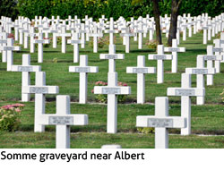
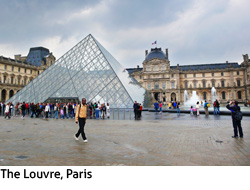
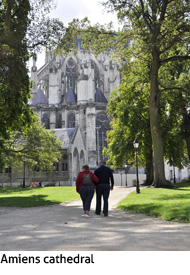

THERE IS MUCH to do in the area with plenty to satisfy all ages and interests. AGINCOURT with its family-friendly visitors’ centre is about 10 km away. The battlefields of the Somme are within easy reach, as is LA COUPLE, constructed in 1943 and now a history centre with presentations on the occupation of Northern France. PARIS (and Disneyland) is just over 2 hours away by car or train making it an ideal day trip. BRUGES, at just over 2 hours away, is well worth a day trip. AQUALAUD is a water land adventure park – a fun day out for all the family. NAUSICAA is one of France's top attractions and a 'must see' for anyone. 
A tour includes a 1.2 million litre shark pool, 11,000 sea animals and exhibits which cover almost every aspect of marine life. The sandy beaches of the COTE D’OPALE are 35 minutes away and great places to visit in all weathers. The area is known as the ‘Opal Coast' because local artists who painted it, used the colours of the opal stone. The wide, sandy beaches are usually very quiet with lots of room for families. LE TOUQUET is approximately half an hour away on the coast. Driving into the town you pass through wooded areas with sporting activities, upmarket houses, weekend retreats and a casino. Le Touquet also has traffic free shopping streets with all the usual beach activities, sand yachting, kites etc. BERCK has a wide sandy beach and is popular for kite flying, sand yachting and horse riding.
Either side of the Somme Bay are the towns of ST VALERY SUR SOMME and LE CROTOY. Both have many attractions and plenty of restaurants (most specialising in fish and sea food). St.Valery is a medieval town on the hill with spectacular views across the bay.
Situated at the confluence of the rivers Canche and Ternoise HESDIN has an impressive central cobbled 'Grande Place' dominated by the 16th century town hall. Market day is Thursday, but the boutiques, restaurants and bars, its historic church and buildings, and its status as a 3 star 'ville fleuri' (flowered town) make it a town pleasant to visit on any day.

AMIENS is an interesting place to visit. The town is best known for the impressive 13th century Amiens cathedral – the largest gothic cathedral in France. The Saint-Leu region, below the cathedral, is a sector of canals lined with small houses and is a pleasant part of Amiens to explore, a popular place to promenade, and one of the busiest places for cafes and restaurants. Other highlights in Amiens include: the curious looking 14th century belfry and the home of Jules Verne which has been converted into an extensive museum.Things to do 2